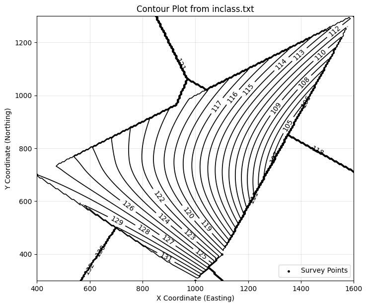

# =====================================================================
# Script: plot_contours_gridded_from_xyz.py
# Author(s): Sensei + OpenAI
# Date: 2025-08-12
# Description:
# Plan-view contouring from scattered XYZ by gridding + interpolation.
# Supports line or filled contours, optional basemap, and overlay of
# original points. Designed for JupyterBook lessons.
# =====================================================================
import numpy as np
import pandas as pd
import matplotlib.pyplot as plt
from scipy.interpolate import griddata
def plot_contours_gridded_from_xyz(
filename,
sep='\t',
# levels: pass explicit list, or define start/stop/step, or None to auto
levels=None,
level_start=None, level_stop=None, level_step=None,
nx=200, ny=200,
method='cubic', # 'linear'|'cubic'|'nearest'
fillna='nearest', # None|'nearest'
filled=False, # False: contour lines; True: filled
cmap='terrain',
show_points=True,
point_size=6, point_color='k',
basemap_path=None, # e.g., "SomewhereUSABaseMap.png"
basemap_extent=None, # (xmin, xmax, ymin, ymax) if using basemap
title=None,
ax=None
):
"""
Plot plan-view contours by first interpolating scattered XYZ onto a grid.
Parameters
----------
filename : str
Path to text file with columns 'X-Easting', 'Y-Northing', 'Z-Elevation'.
sep : str, optional
Column delimiter (default tab).
levels : sequence of float, optional
Explicit contour levels. If None, will use (level_start, level_stop, level_step)
if provided, else auto-generate 10 levels from data range.
level_start, level_stop, level_step : float, optional
Convenience to build levels = np.arange(start, stop+step, step).
nx, ny : int
Grid resolution in X and Y.
method : {'linear','cubic','nearest'}
griddata interpolation method.
fillna : {None,'nearest'}
Fill NaNs after interpolation (useful near convex hull edges).
filled : bool
If True, use filled contours (contourf); else contour lines.
cmap : str
Matplotlib colormap for filled contours.
show_points : bool
Overlay original survey points.
point_size : float
Marker size for original points.
point_color : str
Color for original points.
basemap_path : str or None
Optional raster image path to show under contours.
basemap_extent : tuple or None
Extent (xmin, xmax, ymin, ymax) for basemap.
title : str or None
Plot title; defaults to 'Contour Plot from <filename>'.
ax : matplotlib Axes or None
Axes to draw into. If None, a new figure/axes is created.
Returns
-------
Xg, Yg, Zg, cs, ax : ndarray, ndarray, ndarray, QuadContourSet, Axes
Gridded coordinates/values, the contour set, and the axes.
Provenance
----------
Script by Sensei + OpenAI (2025-08-12)
"""
# --- Load data ---
df = pd.read_csv(filename, sep=sep)
x = df['X-Easting'].to_numpy()
y = df['Y-Northing'].to_numpy()
z = df['Z-Elevation'].to_numpy()
xy = np.column_stack([x, y])
# --- Build grid ---
xi = np.linspace(x.min(), x.max(), nx)
yi = np.linspace(y.min(), y.max(), ny)
Xg, Yg = np.meshgrid(xi, yi)
# --- Interpolate to grid ---
Zg = griddata(xy, z, (Xg, Yg), method=method)
if fillna == 'nearest':
mask = np.isnan(Zg)
if mask.any():
Zg[mask] = griddata(xy, z, (Xg, Yg), method='nearest')[mask]
# --- Levels logic ---
if levels is None:
if (level_start is not None) and (level_stop is not None) and (level_step is not None):
levels = np.arange(level_start, level_stop + 0.5 * level_step, level_step, dtype=float)
else:
zmin = np.nanmin(Zg); zmax = np.nanmax(Zg)
levels = np.linspace(zmin, zmax, 10)
# --- Plot ---
created_fig = False
if ax is None:
fig, ax = plt.subplots(figsize=(7.5, 6.5))
created_fig = True
else:
fig = ax.get_figure()
# Optional basemap
if basemap_path is not None:
im = plt.imread(basemap_path)
if basemap_extent is None:
basemap_extent = (x.min(), x.max(), y.min(), y.max())
ax.imshow(im, extent=basemap_extent, origin='upper')
# Contours
if filled:
cs = ax.contourf(Xg, Yg, Zg, levels=levels, cmap=cmap)
cb = fig.colorbar(cs, ax=ax, shrink=0.85, pad=0.02)
cb.set_label('Z')
else:
cs = ax.contour(Xg, Yg, Zg, levels=levels, linewidths=1.25, colors='k')
ax.clabel(cs, inline=True, fontsize=10)
if show_points:
ax.scatter(x, y, s=point_size, c=point_color, label='Survey Points')
ax.legend(loc='lower right')
ax.set_title(title or f'Contour Plot from {filename}')
ax.set_xlabel('X Coordinate (Easting)')
ax.set_ylabel('Y Coordinate (Northing)')
ax.set_xlim([x.min(), x.max()])
ax.set_ylim([y.min(), y.max()])
ax.set_aspect('equal', adjustable='box')
ax.grid(True, alpha=0.3)
if created_fig:
plt.tight_layout()
plt.show()
return Xg, Yg, Zg, cs, ax
# Gridded, filled contours with explicit levels
Xg, Yg, Zg, cs, ax = plot_contours_gridded_from_xyz(
'inclass.txt',
filled=False, cmap='terrain',
level_start=100, level_stop=150, level_step=1,
show_points=True
)
